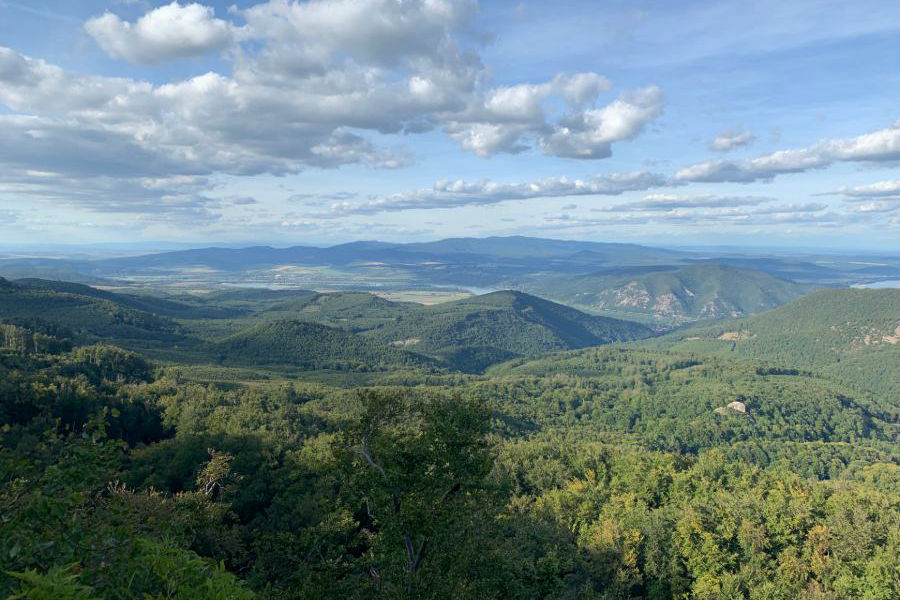
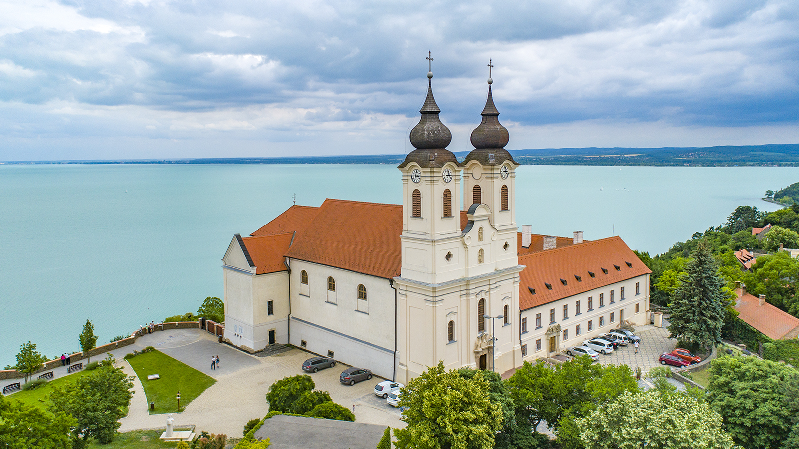

Irány a Természet!
Fedezd fel a túrakalauzát. Magyarország legszebb tájai és rejtett kincsei várnak rád.
Projekt Információk
- Célkitűzés: Hazai túraútvonalak népszerűsítése digitális eszközökkel.
- Szerkesztők: A lelkes természetjárói.
- Tartalom: Saját és jogtiszta természetfotók gyűjteménye.

Lillafüred
A Bükk-vidék egyik legszebb települése. A Palotaszálló és a vízesés mesébe illő hangulatot áraszt.
Kiemelt: Anna-barlang

Dobogókő
A Dunakanyar legszebb kilátópontja. Sokan úgy tartják, itt található a "Föld szívcsakrája".
Kiemelt: Prédikálószék

Tihany
A Balaton ékköve. Az apátság mellett a levendulamezők és a Belső-tó nyújtanak felejthetetlen élményt.
Kiemelt: Levendula Ház
Túratippek
Megfelelő lábbeli
Soha ne indulj el utcai cipőben. Egy jó túrabakancs védi a bokádat és megakadályozza az elcsúszást.
Hidratáció és energia
Legyen nálad legalább 1.5 liter víz és némi gyors energiát adó olajos mag vagy szőlőcukor.
Tervezés
Mindig nézd meg az időjárás-jelentést és töltsd le az offline térképet (pl. Természetjáró app).
Természetfotók
A magyar erdők pillanatai